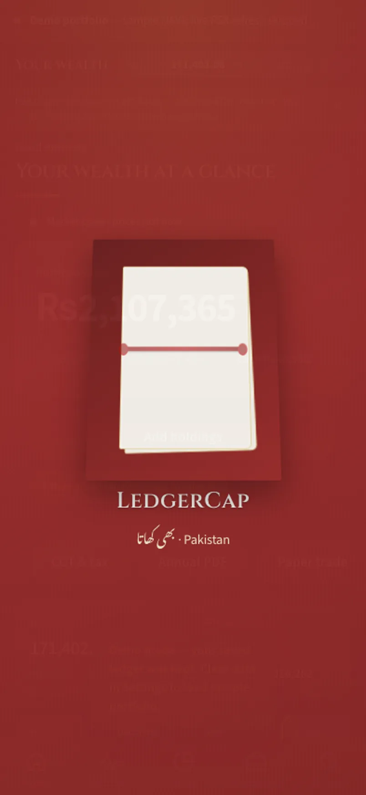

Illustrative story Illustrative story. People and data are fictional.
LedgerCap · Islamabad, Pakistan
How Nida logs SIPs without spreadsheets
Nida logs SIPs on phone, reviews funds on iPad, monthly summary on laptop.
“The SIP is a line, not a lecture.”

Before and after
Illustrative numbers from a fictional week.
Before
After LedgerCap
A day with Nida
-
SIP tick
Salary day: Nida ticks the SIP on her phone so the line lives in the app, not in a buried email receipt.
-
Funds on iPad
Fund list on the iPad at lunch — NAVs visible, no lecture about what she “should” buy.
-
Monthly laptop
Month summary on the laptop replaces the spreadsheet she always meant to update on Sundays.
-
Watchlist trim
Watchlist trimmed on the laptop; fewer tickers, clearer intent, still zero advice.
-
Phone lock
Phone confirms the SIP line before she puts the device face-down. The SIP is a line, not a lecture.
Watch it
A day across devices — silent walkthrough with captions. No autoplay with sound.
Read transcript
Nida logs SIPs on phone, funds on iPad, month on laptop. Fictional.
Features Nida uses
Illustrative story. People and data are fictional.